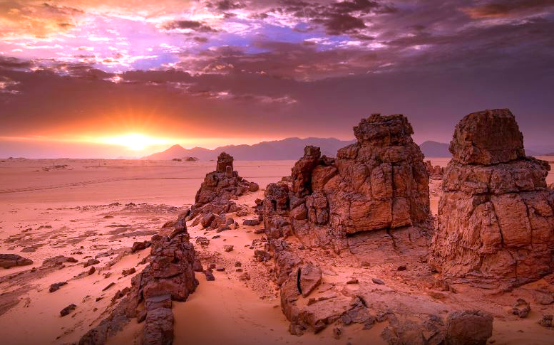

Le Tassili n'Ajjer est une région montagneuse et désertique située dans le sud-est de l'Algérie, près de la frontière avec la Libye.
Le tassili n’Ajjer est constitué de grès, formé par les importants dépôts sédimentaires superposées de vase et de sable solidifiés issus de l'érosion partielle des montagnes cristallines du Paléozoïque (de -541 à -252,2 millions d'années) et déposés par les océans du Mésozoïque (de -252,2 à -66 Ma) qui couvraient la totalité de l'actuel Sahara. Puis, le socle des grès stratifiés a été rejeté en périphérie par l'irruption du massif du Hoggar1. De fortes variations climatiques et hydriques ont ensuite raviné, érodé et façonné la roche voici quelques 4 millions d'années.
Paysage du tassili n'Ajjer
Le parc culturel du Tassili (72 000 km2) est inscrit depuis 1982 sur la liste du patrimoine mondial de l'UNESCO4 et classé réserve de biosphère depuis 1986. Des animaux en voie de disparition tels que le mouflon et des gazelles y ont trouvé refuge. Il est considéré aussi comme l'un des plus grands et anciens « musées rupestres à ciel ouvert » du monde, au même titre que les fresques des aborigènes d'Australie ou des khoïsan de Namibie.